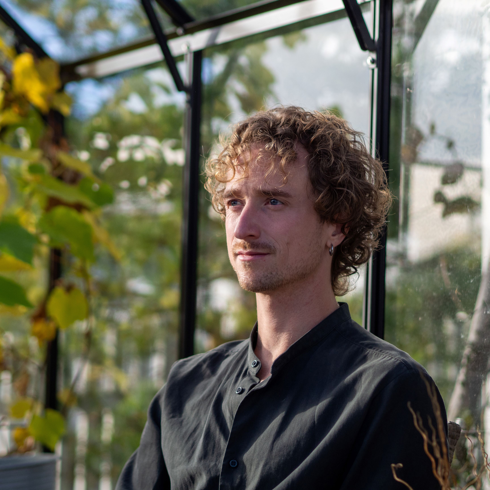

I am an architect. MSc and ir. from TU Delft, Architecture, Urbanism and Building Sciences, graduated cum laude in 2023.
I grew up in Larkollen, outside Oslo, with a view over the fjord. In the woods behind the house there was a small hidden pond that changed slowly through the year, and watching it is where my interest in time began, time as something buildings live inside rather than resist. That interest ran through my graduation project, Arctic Symphony, an Explore Lab thesis sited on a wild stretch of river in Alta.
Before Delft I spent an exchange year at La Trobe University in Melbourne and studied technical design at Noroff in Oslo. Alongside my studies I worked nine years at Ebano AS, designing restaurants, bars and cafés with a focus on commercial kitchens, from layout through to custom stainless steel products, and later running planning and logistics for a house build. I interned at Lüchinger Architects in Rotterdam on the transformation of a historic barn at Oud Alblas, and I was commissioned by the dean at TU Delft to build two architectural models of Ethiopian buildings, one of which was shown at the Venice Architecture Biennale in 2023. That same year our collective Bounding Box shared first place in the Upcycle Mall Rotterdam competition with Harbour Box, a proposal built from waste materials off the Rotterdam docks. I also co-founded Alternative Realities, a small research collective looking at how architecture and urban space can develop alongside natural processes. It is no longer active.
I have run my own practice since 2023, registered as Bjørkå Flatin ENK in 2025. I split my time between Norway and São Paulo and work mostly online, with clients in Norway, Sweden, Portugal, the United States and Brazil. The work runs from a planning application for a care building, through competition proposals, to architectural visualisation.
I also build software for the industry I work in. Tinn is a specification tool for the built environment and hytteboka.app is an app for cabin owners. Both are running. Most projects, though, still start with a physical model on the desk.
Jeg er arkitekt. MSc og ir. fra TU Delft, Architecture, Urbanism and Building Sciences, uteksaminert cum laude i 2023.
Jeg vokste opp i Larkollen utenfor Oslo, med utsikt over fjorden. Inne i skogen bak huset lå et lite, skjult tjern som endret seg langsomt gjennom året, og det å se på det er der interessen min for tid begynte, tid som noe bygninger lever inni snarere enn står imot. Den interessen gikk gjennom hele avgangsprosjektet mitt, Arctic Symphony, en Explore Lab-oppgave lagt til en vill strekning av elva i Alta.
Før Delft hadde jeg et utvekslingsår ved La Trobe University i Melbourne og studerte teknisk design ved Noroff i Oslo. Ved siden av studiene jobbet jeg ni år hos Ebano AS med utforming av restauranter, barer og kafeer med vekt på storkjøkken, fra planløsning til spesialdesignede produkter i rustfritt stål, og senere med planlegging og logistikk for oppføringen av en enebolig. Jeg var praktikant hos Lüchinger Architects i Rotterdam på transformasjonen av en historisk låve i Oud Alblas, og jeg fikk i oppdrag av dekanen ved TU Delft å bygge to arkitekturmodeller av etiopiske bygg, hvorav den ene ble vist på Arkitekturbiennalen i Venezia i 2023. Samme år delte kollektivet vårt Bounding Box førsteplassen i konkurransen Upcycle Mall Rotterdam med Harbour Box, et forslag bygget av avfallsmaterialer fra havna i Rotterdam. Jeg var også medgründer av Alternative Realities, et lite forskningskollektiv som så på hvordan arkitektur og byrom kan utvikles i samspill med naturlige prosesser. Det er ikke lenger aktivt.
Jeg har drevet egen praksis siden 2023, registrert som Bjørkå Flatin ENK i 2025. Jeg deler tiden mellom Norge og São Paulo og jobber mest online, med kunder i Norge, Sverige, Portugal, USA og Brasil. Arbeidet spenner fra byggesøknad for et helsebygg, via konkurranseforslag, til arkitekturvisualisering.
Jeg lager også programvare for bransjen jeg jobber i. Tinn er et beskrivelsesverktøy for byggebransjen, og hytteboka.app er en app for hytteeiere. Begge er i drift. Men de fleste prosjektene begynner fortsatt med en fysisk modell på bordet.
Sou arquiteto. MSc e ir. pela TU Delft, Architecture, Urbanism and Building Sciences, formado cum laude em 2023.
Cresci em Larkollen, nos arredores de Oslo, com vista para o fiorde. Na mata atrás da casa havia um pequeno lago escondido que mudava lentamente ao longo do ano, e foi observando-o que começou meu interesse pelo tempo, o tempo como algo dentro do qual os edifícios vivem, em vez de algo a que resistem. Esse interesse atravessou todo o meu projeto de graduação, Arctic Symphony, um trabalho do ateliê Explore Lab situado em um trecho selvagem de rio em Alta.
Antes de Delft, passei um ano de intercâmbio na La Trobe University, em Melbourne, e estudei desenho técnico na Noroff, em Oslo. Paralelamente aos estudos, trabalhei nove anos na Ebano AS, projetando restaurantes, bares e cafés com foco em cozinhas industriais, da planta até produtos sob medida em aço inoxidável, e depois cuidando do planejamento e da logística da construção de uma casa. Fui estagiário na Lüchinger Architects, em Roterdã, na transformação de um celeiro histórico em Oud Alblas, e fui encarregado pelo diretor da faculdade da TU Delft de construir duas maquetes de edifícios etíopes, uma das quais foi exibida na Bienal de Arquitetura de Veneza em 2023. No mesmo ano, nosso coletivo Bounding Box dividiu o primeiro lugar no concurso Upcycle Mall Rotterdam com o Harbour Box, uma proposta feita a partir de materiais descartados do porto de Roterdã. Também cofundei a Alternative Realities, um pequeno coletivo de pesquisa que investigava como a arquitetura e o espaço urbano podem se desenvolver junto com processos naturais. Não está mais ativo.
Tenho meu próprio escritório desde 2023, registrado como Bjørkå Flatin ENK em 2025. Divido meu tempo entre a Noruega e São Paulo e trabalho principalmente online, com clientes na Noruega, Suécia, Portugal, Estados Unidos e Brasil. O trabalho vai de um pedido de licenciamento para um edifício de saúde, passando por propostas de concurso, até visualização arquitetônica.
Também desenvolvo software para o setor em que trabalho. O Tinn é uma ferramenta de especificação para a construção civil, e o hytteboka.app é um aplicativo para donos de cabanas. Ambos estão em operação. Mas a maioria dos projetos ainda começa com uma maquete física sobre a mesa.
